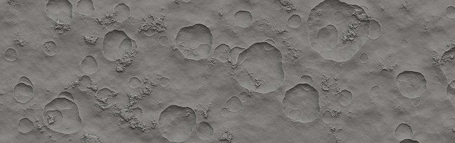

Holdkráterek

A Holdon több magyar vonatkozású kráter található. Mindegyik konkrét személy nevét viseli.
Magyar személyekről elnevezett Holdkráterek
| Név |
Foglalkozás |
Kráter átmérője |
| Kármán |
mérnök |
210 km |
| Petzval |
mérnök |
150 km |
| Szilard |
fizikus |
147 km |
| Neumann |
matematikus |
107 km |
| Eötvös |
fizikus |
105 km |
A Hold rétegtana
A rétegtani egységek föntről lefelé:
- Kopernikuszi (fiatal, sugársávos kráterek),
- Eratoszthenészi (fiatal, de sugársáv nélküli kráterek),
- Imbriumi (az Imbrium-medence kialakulásától: kidobott takarók, mare elöntések),
- Nektári (a Nektár-medence kialakulásától: medencék, márék),
- Prenektári (minden korábbi kőzettest).
Források: Hold – Wikipédia, Pixabay